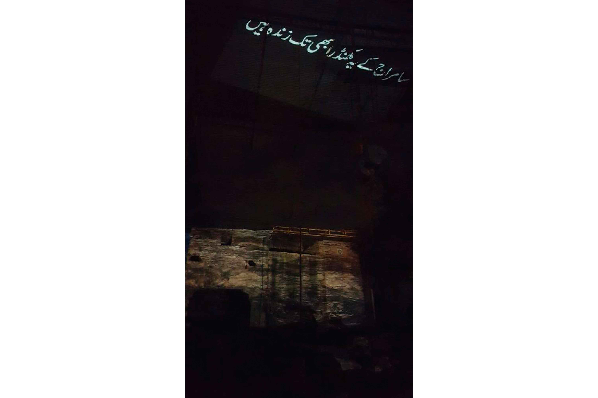

GANDI ENGINE COMMISSION
September 19- 20, 2015 (Lahore)
The Gandi Engine Commission is an experimental, site-specific workshop that navigates through the Ravi to explore themes of development and destruction, waste and toxicity. Drawing on the Persian meaning of the word ‘Ravi’ as ‘Narrator’ we activate the river as a site of storytelling - tapping into the memories and archives within its subsoil, excavating and re-framing stories of multiple wreckages and ruinations from colonial histories to the neo-colonial present.
Deriving our title from a water treatment plant off the Ravi, the Gandi Engine (dirty engine), the project looks at the river as a recipient and vessel of the copious and continuous sewage of the city. While numerous commissions have been installed to reverse the death/destruction of the Ravi, ours is an exercise in moving through space and time, to pause, reflect and re-examine our relationship as urban dwellers to the landscape and ecology we inhabit, to ask what it means to live and work with the waste, residue and detritus of the city - with what is cast aside.
The Gandi Engine Commission was created by the Tentative Collective in collaboration with Syma Tariq for, “Ancestors: Architecture of Memory”, a program held in Lahore with the Lahore Biennale Foundation from the 19 – 20th of September, 2015. The workshop was completed with a public art installation at Shah Deen Park, where a dysfunctional water sanitation plant pumps toxic sewage into the river, across the street from a metal workshop processing scrap metal from Gadani (Balochistan’s shipbreaking yard) before selling it to the steel and metal industries of Punjab. The installation consisted of four video projections across these two sites, highlighting the larger geopolitical intersections occurring in the space, rendering these sites into monuments to capitalism - to the endless and relentless production and circulation of waste and suffering that is global capitalist imperialism.
-

-

- 